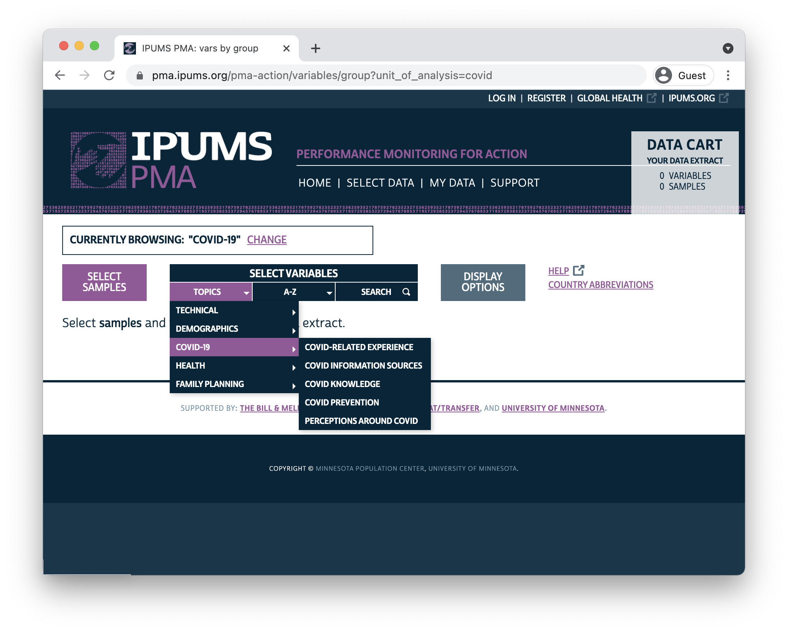

A new panel study promises insights into the impact of COVID-19 on family planning and reproductive health.
The COVID-19 pandemic has strained healthcare systems across the globe, and researchers are already beginning to examine the short-term impacts of service disruption on family planning and reproductive health.1 This spring, IPUMS PMA released COVID-19 survey data collected from reproductive age women between May and August 2020 in these countries:
These women are participants in an ongoing panel study focused on core PMA topics in reproductive health. The baseline survey data for this study have already been released, and we will demonstrate how to link records between the baseline survey and the COVID-19 follow-up in an upcoming post in this series. Subsequent waves of the panel study will help to show how womens backgrounds and levels of knowledge, perceptions, and experiences with COVID-19 shape long-term family planning outcomes.
In this post, well cover the contents of the PMA COVID-19 survey. If youre a registered IPUMS PMA user, you can obtain COVID-19 survey data by navigating to the new COVID-19 Unit of Analysis.
The PMA COVID-19 survey is a follow-up telephone survey administered to women who participated in an in-person baseline survey for a broader panel study. This baseline survey was collected between November 2019 and Februrary 2020 - prior to the appearance of COVID-19 in most countries.
When the outbreak of COVID-19 grew into a global pandemic in the spring of 2020, PMA representatives partnered with the Ministries of Health in DRC, Kenya, Burkina Faso, and Nigeria to design a shorter - approximately 30 minute - survey responding directly to the effect of COVID-19 on women and their households.
Women were selected for the baseline survey if they were age 15-49 and resided in a household screened at random from a sample cluster represented by EAID. All women surveyed at baseline where eligible to participate in the COVID-19 follow-up, provided that they 1) agreed to the interview, and 2) owned or had access to a telephone.
Youll find survey weights adjusted for the probability that a given woman had access to a telephone recorded in the new variable CVQWEIGHT. This weight is normalized for the target population of each sample (note that two of the samples are not nationally representative):
Youll find more detail about the construction of PMA COVID-19 survey weights here. For information about response rates for each sample, check out sample-specific Dataset Notes.
The COVID-19 survey included a number of questions that youll also find in the baseline survey and in future rounds of the panel study. These include topics like fertility preferences, current or recent use of family planning, and core demographic information. You might use these variables, for example, to see if women who were using a particular contraceptive method at the time of the baseline survey had stopped using that method during the first few months of the COVID-19 outbreak.
Variables from the remainder of the COVID-19 questionnaire are organized on the IPUMS PMA website under 6 topic headings:

All sampled women report whether they have needed to visit a health facility since COVID-19 restrictions began - including family planning visits - in CVFACVISIT. Additionally, all sampled women report whether they experienced any of the following difficulties accessing healthcare services during the same time period (select all that apply, or none):
Finally, women who did visit a healthcare facility since COVID-19 restrictions began report whether they successfully accessed needed services in HCACCESS.
In addition to their own experiences accessing healthcare during the outbreak, women who confirmed that they had heard or read about COVID-19 were also asked to report the impact of the virus on their communities and in their households.
Specifically, these women were asked to estimate whether most, some, few, or no people in their community had been infected, and whether any close relatives or friends had been infected. They were also asked to rate their level on concern about the spread of COVID-19 in their community.
Youll find several measures related to household-level impacts, including indicators for whether anyone in the womans household experienced food insecurity, and whether the the household had experienced income loss. Related questions measure changes in married / partnered womens autonomy during the outbreak, including whether they became more or less reliant on their partner for basic needs (if at all), and whether they or their partner now makes decisions about household purchases.
Women who confirmed that they had heard or read about COVID-19 were also asked about several different sources of information about COVID-19. For each source of information, women were asked both:
13 sources of information were listed (select all that apply, or none):
Youll also find variables in this topic heading related to awareness, trust, and use of an emergency number or call center for reporting suspected cases of COVID-19.
Women who confirmed that they had heard or read about COVID-19 were asked to identify common symptoms of COVID-19 from this list (select all that apply, or none):
These women were also asked whether any of the following actions could reduce the risk of being infected (available responses are yes, no, or do not know for each action):
Women who confirmed that they had heard or read about COVID-19 were asked if they had personally taken any action to prevent becoming infected. If so, they were asked which of the following actions they had personally taken (select all that apply):
Women who confirmed that they had heard or read about COVID-19 were also asked if they were able to avoid contact with people outside of their own household. If not, they were asked if any of the following reasons explained why they might not be able to avoid contact (select all that apply, or none):
Women who confirmed that they had heard or read about COVID-19 were asked several questions about their overall level of concern about COVID-19, including how concerned they were about getting infected, whether they were worried about the impact of COVID-19 on their households finances in the future, and whether they would conceal information about a family members COVID-19 infection.
These women were also asked whether each of the following statements are true about COVID-19 (available responses are yes, no, or dont know for each statement):
For the next two months, well be taking a deep dive into the PMA COVID-19 survey data. Along the way, well showcase several examples of R code you can use to create publication-ready tables and data visualizations, and well explore some of the research questions you might answer by linking COVID-19 data to the baseline survey. Check back here for a new post every two weeks!
For discussion, see (Senderowicz and Higgins 2020), (Temmerman 2021), and (Ferreira-Filho et al. 2020).
If you see mistakes or want to suggest changes, please create an issue on the source repository.